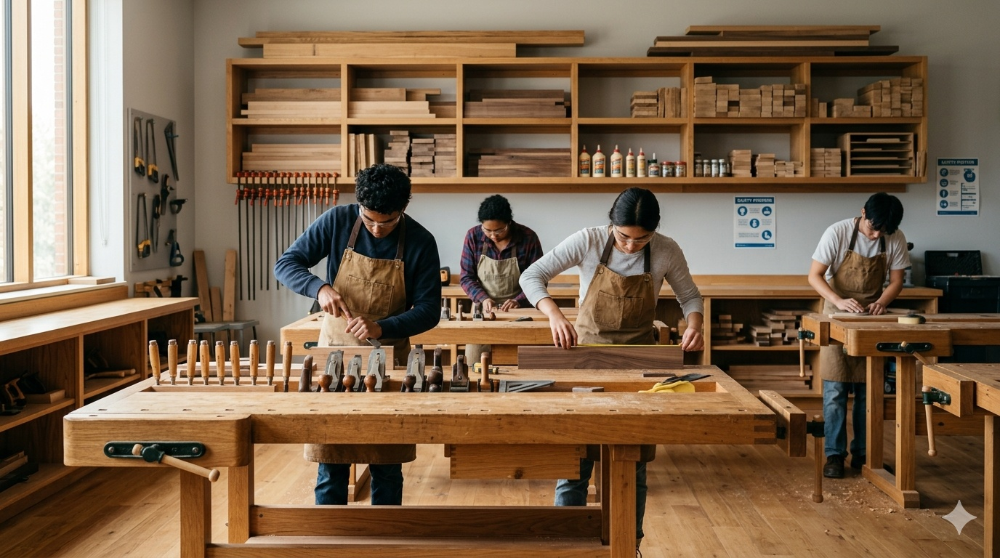

Pilih Kayu yang Berkualiti
Kayu yang baik akan menghasilkan sambungan yang lebih kuat dan tahan lama.
Baca Lagi →Panduan, tips dan fakta menarik dalam dunia pertukangan kayu.
Kayu yang baik akan menghasilkan sambungan yang lebih kuat dan tahan lama.
Baca Lagi →Utamakan keselamatan semasa bekerja di bengkel.

Teknik sambungan kayu telah digunakan sejak zaman dahulu.
Ketepatan ukuran membantu menghasilkan kerja yang kemas.

Kayu yang disimpan dengan baik kurang risiko meleding.
Gunakan goggle, apron dan pelindung telinga semasa kerja bengkel.